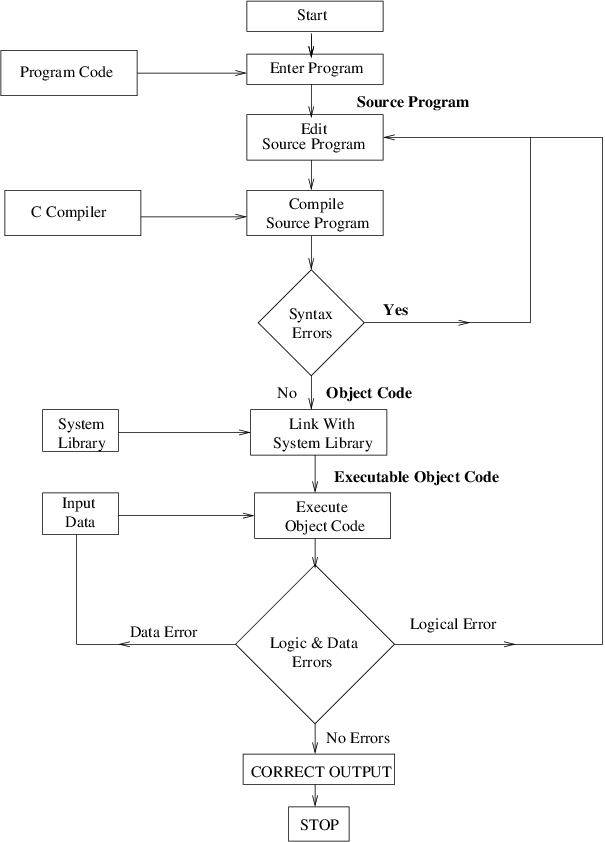
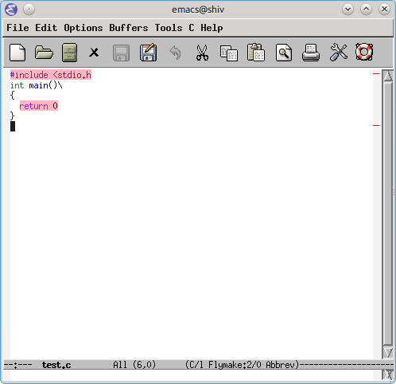

So it begins.The journey to a destination which will never be reached. The journey to perfection! The journey to perfect programs. I have read somewhere that a perfect program is one from which nothing can be deleted. Well, the fun is not in the destination but in journey. The process of learning is fun. And I will share this fun with you. Of all popular mainstream languages C, and Lisp are two oldest but we cannot really say that Lisp is really popular. It has a niche area and it is there for that. So let me redefine my statement. Of all general-purpose popular programming language C is the oldest. So what makes C so special that it is still out there. Well, C and Unix were born almost together in early 1970s. Then Unix was ported in C and the notion that operating systems can be only written in assembly language, because it has to do time critical things, was destroyed. After that Unix became very popular. Then when C++ was not yet there Windows was written in C and more and more programs were written in C. It might have been the case that Microsoft and Apple would have written their OS in C++ had it been there. So, essentially what happened that there is a lot of code base which is there in C. Also, C++’s backward compatibility is one of the reasons why C++ is so popular. When C was invented there was no structured programming language and code was mostly written in assembly. With C it gave the power of assembly and benefits of structured language like code reuse, modularity, and portability among others. Because of these reasons C became immensely popular and is still popular.
C is simple, small, succinct. It may be dirty but is quick. It may have its quirks but it is a success. C is really so simple yet so deceptive. It will take one years of programming to really thoroughly understand it. Note that this book will make heavy use of C99 specification. It will contain almost a copy of n1124.pdf which I have.
I have will classify chapters in two categories. One is compiler/language specific and second specification specific. Chapter no. 9, 10 and 11 are very tightly related to specification while rest of the book is related to compiler and programming. Chapters which treat standard library of C include information from both specification and compiler. It is suggested that the reader reads chapter 9, 10 and 11 after finishing rest of the book.
This book is in process of getting some extra content so keep looking at contents page changes.
Because it is the most common denominator. Any language be it C++, Java, Perl, Python etc have got bindings in C. Whenever you are willing to extend these languages you need to know C. Also, if by any chance you are going towards system programming you need to C. C is everywhere. There is no escape from learning it; it does not matter whether you like it or not.
There is one more important point worth noting here is that C++ is far more complex compared to C. Also, the runtime calculations of C++ make it slightly slower than C. The library of C is much smaller than C. Therefore wherever there is a memory constraint or extreme high performance is needed C is preferred. The simple syntax of C means its code is very verbose for programmer in the sense that if you read code then you can very easily see what instructions the code is going to translate into.
It is very easy to write interfaces to other languages because other languages expose there objects in terms of C structures not the other way around. The reason for this is huge popularity of C and large code base perhaps.
One more important feature is portability. Note that if you want your program to have high degree of portability then you should not use C99 features but rather ANSI C because ANSI C compilers are available on most platforms. Even though Java claims to be portable or other interpreted languages they are limited by the fact that the interpreters or VMs(JVM in case of Java) is not available on all the platforms. Therefore, C is the MOST portable language. :-)
C was formally delivered to this world in 1972 and conceived by Dennis MacAlistair Ritchie in 1968. What happened was there was a project for development of a text processor and GE-645 was bought by AT&T Bell Labs. At that time Ken Thompson had developed a game called “Space Travel”. Then they had another machine PDP-11. Before that they had PDP-7. Now all the time the code for “Space Travel” had to be rewritten and also the Unix had to be ported. So when C was invented it was used to write Unix code in C. And then “Space Travel”. I do not know what was the real motivation the language, the OS or the game. But such is the story. Also, I have not studied much in this area about the exact events. In 1972 C was formally announced. C takes its features from BCPL a language by Martin Richard and B by Ken Thompson. AT&T Bells labs gave Unix and a C compiler to many universities at a normal fees and it grew with leaps and bounds from there and became a ubiquitous language. For many years “The C Programming Language” served as a reference of C. Later it was standardized by ANSI and then by ISO standards.
C is a structured, statically typed, somewhat low-level, high-performance compiled language. It does not support object-oriented programming like most modern programming including C++, Java, Perl, Python, Ruby etc. However, that does not mean you cannot do object-oriented programming in C. It is just that C does not have support at the language level and it is painful to do so. C is low level because it allows you to handle memory contents directly. You have something called void which is raw representation of memory content. C also does not support functional or generic programming but again it is possible to do so with painful hacks. One of the coveted features is C programs deliver very high performance if written correctly as it does not have reunite penalties of virtual functions of OOP (object-oriented programming) languages.
Programming is exactly like Mathematics. As in Mathematics you need to read theory, understand solved problems and then solve more and more problems by yourself. If you cannot solve ask your teacher. Similarly, in programming you need to read about language, try examples given, read code written by others and then develop your own code. If you get stuck there are umpteen number of tutorials, mailing lists and groups to help you. I recommend comp.lang.c user group for C programming. Its interface is at http://groups.google.com/group/comp.lang.c/. You should join it and participate there. http://www.stackoverflow.com/ is also a very good forum to ask questions about programming in general.
Since this book is written for even beginner please allow me to start from beginning. As the reader may know a computer consists of many components and one of the most or rather most important part is processor often named as CPU (central processing unit). The logic gates in CPUs are formed and instructions like ADD (addition), SUB (subtraction), MUL (multiplication), DIV (division) etc are implemented in hardware of CPU. When we write a program say C program the instructions given in our program is translated to a format which operating system can understand. In our case that is GNU/Linux this executable format is known as ELF (executable and linkable format). For the curious you can read http://en.wikipedia.org/wiki/Executable_and_Linkable_Format and there are lots of specification for different CPUs. Then operating system interprets these files and ask CPU to perform action. So a C program does not directly talk to processor but it rather talks to operating system or rather kernel of the operating system and in turn the operating system or kernel provides services to your program. There is a typical life cycle in development of a program. It has been given as a flowchart below.
You may be wondering so that is very easy. You just learn programming in C and start hacking on keyboard to produce software. Well, that is partially true but a program has several desired attributes which you must consider. Any program cannot be considered a good program unless it satisfies following requirements or possess following attributes (Note: These are generic attributes and not specific to C programming language):
1. Correctness: Correctness means that a program satisfies its requirement specification. It means that for a specified input the specified output should be produced. This particular attribute is of most significance. It does not matter whether other attributes are present or not but this one is a must. If a program behavior is not correct then it is of no use.
2. Efficiency: Efficiency is second to correctness only. Say you are developing a text editor and you take 5 seconds to load a 10KB text file then by no means you can persuade a user to use you text editor. A program/software must be as efficient as possible. Sometimes it clashes with other attributes and also depend on the problem domain that how strict are the requirements.
3. Security: A very highly desirable feature in programs which deal with more than one computer and also for desktop applications. It is very bad if someone can take advantage of buffer overflow, stack overflow, integer overflow etc. in your program and you must guard against these at all times. Note that to provide security you must put extra checks which will go against efficiency.
4. Robustness: Sometimes users will not give correct inputs. For example they may enter a character when an integer is asked for or they can give input beyond range. In such cases you must handle the erroneous input. This is just one example. Sometimes your memory allocation may fail. The rule is program defensively. All such input validations and checks on memory do take a toll on our second attribute but that does not mean that we can neglect it.
5. Maintainability: Even a one line program has to be maintained if it is worth it! Typically the life of a program far exceeds the development time. In almost all the cases the original programmer is not maintainer. Because of these reasons you must strive for maintainability. You should follow some coding standards like I highly recommend http://www.gnu.org/prep/standards/. Clear documentation is one of the prerequisites of maintainability.
6. Extensibility: Let us take our example of text editor and say our editor is complete. Now someone else would like to provide a plugin which will enable syntax highlighting and project management for this editor. So, in order to do so you can choose a plugin-based extensible architecture or you can allow them to extend the editor using scripting languages like Guile, Python, Lua etc.This features allows user to collaborate and make your program better. Remember the rule is the more the merrier here.
7 Portability: It is an elusive and painful goal. Let us say we write our text editor GUI using something like Xlib directly then we will have to port the entire GUI for other non X-based OSes. So we can choose some cross-platform GUI libraries like GTK+, Qt, WxWidgets etc. Even then when system calls come in your software you can do not much but either write wrappers and do conditional compilation.
I am going to use Clang as compiler, Emacs as my editor with CEDET, ECB and Flymake. For debugging I will use xxgdb though you can debug in Emacs itself. I just love the good old X gui of xxgdb. For dynamic memory checking, heap corruption, cache corruption etc I am going to show you how to use valgrind. For profiling gprof and for code coverage gcov. Note that you can use gcc for compiling programs. Most of the systems come with gcc. However, I like clang for beginners because it is usually faster, produces better error messages (which is very important for a beginner) and typically consumes less memory. Also, it never hurts to know something new. For compiling programs I will use GNU Make though in the beginning I will show you how to compile on command line. Let us begin with Emacs configuration file .emacs:
(custom-set-variables
;; custom-set-variables was added by Custom.
;; If you edit it by hand, you could mess it up, so be careful.
;; Your init file should contain only one such instance.
;; If there is more than one, they won't work right.
'(column-number-mode t)
'(cua-mode t nil (cua-base))
'(ecb-layout-name "leftright2")
'(ecb-options-version "2.40")
'(ecb-windows-height 0.2)
'(ecb-windows-width 0.2)
'(make-backup-files nil)
'(scroll-bar-mode (quote right)))
(custom-set-faces
;; custom-set-faces was added by Custom.
;; If you edit it by hand, you could mess it up, so be careful.
;; Your init file should contain only one such instance.
;; If there is more than one, they won't work right.
'(default ((t (:inherit nil :stipple nil :background "#ffffff" :foreground
"#221f1e" :inverse-video nil :box nil :strike-through nil :overline nil
:underline nil :slant normal :weight normal :height 98 :width
semi-condensed :foundry "misc" :family "fixed")))))
(require 'cedet)
(require 'semantic/analyze)
(provide 'semantic-analyze)
(provide 'semantic-ctxt)
(provide 'semanticdb)
(provide 'semanticdb-find)
(provide 'semanticdb-mode)
(provide 'semantic-load)
(load "~/.emacs.d/flymake.el")
(add-to-list 'load-path "~/.emacs.d/ecb-snap")
(require 'ecb)
(require 'ecb-autoloads)
(load "~/.emacs.d/rfringe.el")
(require 'rfringe)
(when (load "flymake" t)
(defun flymake-pylint-init ()
(let* ((temp-file (flymake-init-create-temp-buffer-copy
'flymake-create-temp-inplace))
(local-file (file-relative-name
temp-file
(file-name-directory buffer-file-name))))
(list "epylint" (list local-file))))
(add-to-list 'flymake-allowed-file-name-masks
'("\.py\'" flymake-pylint-init)))
(load-file "/usr/share/git-core/emacs/git.el")
(".+\.c$" flymake-simple-make-init flymake-simple-cleanup
flymake-get-real-file-name)
(setq TeX-auto-save t)
(setq TeX-parse-self t)
(setq-default TeX-master nil)
(load "auctex.el" nil t t)
(load "preview-latex.el" nil t t)
Just copy paste the following program in Emacs and the Make file given after that:
//Note:This listing will not compile. It has errors.
#include <stdio.h
int main()
{
return 0
}
do not make a mistake here.
check-syntax:
clang -o nul -Wall -S $(CHK_SOURCES)
Note that there should be a tab before the second line. If you do all steps correctly you should see something like: Note the pink background. If you move your mouse there then you will see the error/diagnostic messages from the compiler. For now I recommend you to read Emacs tutorial and man page of Clang compiler. I will introduce xxgdb and valgrind later. Note that you can modify Makefile but this particular content must remain unchanged. It is the enabler for Flymake. The screenshot is given below;
Move your mouse over pink lines to see the error.
The smallest unit a computer can understand is called a bit. The values for a bit is either 0 or 1. Consider a voltage. It can be 0V or 1.5V or whatever the core CPU voltage is. CPU does not understand numbers but voltages :-). You cannot expect an electronics hardware to understand the same semantics of 0 and 1 which we know. 0 and 1 are abstraction of CPUs voltages in programming. Four bits form a nibble and eight form a byte. A byte is the area of memory which can be addressed by CPU and its content manipulated. To address a memory a CPU has say 4 or 8 or up to 256 pins. For example, in a common 32-bit CPU there are 32 pins whose voltages may represent 0 or 1. Consider all pins are low i.e. 0 then the memory location pointed to is 00000000000000000000000000000000 i.e. a 8 bit memory at location 0 can be accessed. This memory is also called primary memory or RAM (Random Access Memory). So computing this way we can see that a 32-bit processor can access \(2^{32}\) bytes or 4,294,967,296 bytes. You can arrive at this number by 4*1024*1024*1024. This is equivalent to 4GB of RAM. However, modern Intel processors have 36 physical pins to address up to 64GB of memory.
Since a byte has 8 bits, its value may range from 0 to 255 as \(2^8\) is 256. For unsigned data type this will be the range. When all bits are 0 value is zero and when all are high it is 255. Computers use two’s complement form to represent binary number. So if these 8-bits represent signed number the range will be from \(-2^8\) to \(2^8-1\) that is -128 to 127. As you will see later at lowest levels C allows you to access even one bit using something called bit-fields. You should read about two’s complement form at http://en.wikipedia.org/wiki/Two’s_complement in detail. However, I will be treating number systems in the appendices.
To compile and execute a program create a new file, edit it and save it. The extension of file should be *.c. For example, myprogram.c. After that you can give this command at terminal. Here is the corrected code for you.
#include <stdio.h>
int main()
{
return 0;
}
Execute the following command on your command prompt:
$clang nothing.c -o nothing
Then you will see a file named my program is created by compiler if no errors were there in your program. In case of errors, like we had in one shown to you they have to be resolved first. Suppose nothing is produced then you can execute it like
$./nothing
Note that in both the commands $ is not part of command but it is prompt. For you it may be % or # or something fancier (depends on the imagination of your system administrator). To execute this command your working directory must be same as the directory your program is in. Also, note that on some systems TAB auto completes filename so do not do the following by accident:
$clang nothing.c -o nothing.c
This will overwrite your nothing.c by nothing. Let us see how to compile this program using a Makefile. Edit your Makefile like this:
#sample Makefile
check-syntax:
clang -o nul -Wall -S $(CHK_SOURCES)
nothing:nothing.c
clang nothing.c -o nothing
Now from do this from menu. Tools->compile As the command issue make -k test. Your code will be compiled. Makefiles are better than executing commands however you must know underlying commands. You can also use something like CMake or Scons but I think that should be part of a book covering build systems.
{kind=link}
{kind=link}